Bahia
Quem está no cargo. Mostramos os eleitos em 2026, que assumem em 2027.
Resultado provisório TSE, capturado em 29/10/2026. O resultado só é confirmado na diplomação.
Poder Executivo
Administra o governo e executa as leis: saúde, educação, segurança, estradas e o orçamento.
Governador
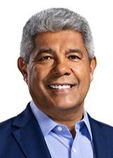
Jerônimo RodriguesPT · 4.626.509 votos✓ Reeleito›Quem comanda cada cidade do estado.
Poder Legislativo
Cria as leis, aprova o orçamento e fiscaliza o Executivo.
Senadores
Jaques WagnerPT · 3.986.690 votos✓ Reeleito›Rui CostaPT · 4.335.196 votos★ Novato no Senado›Deputados federais (39)
Bancada federal por partido
39 cadeiras de Bahia
- PT718%
- PSD615%
- UNIÃO615%
- PL410%
- AVANTE38%
- PCDOB38%
- REPUBLICANOS38%
- PP25%
- PSDB25%
- MDB13%
- PDT13%
- PSB13%
Do partido com mais cadeiras para o com menos, não por posição política. Cada partido usa a sua cor de marca.
Deputados federais (39): buscar e ver a lista
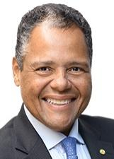
Antonio BritoPSD · 205.815 votos✓ Reeleito›Capitão AldenPL · 105.110 votos✓ Reeleito›Carlos MunizPSDB · 141.762 votos›Charles FernandesPSD · 87.945 votos✓ Reeleito›Claudio CajadoPP · 110.384 votos✓ Reeleito›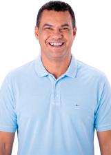
Dal BarretoUNIÃO · 122.667 votos✓ Reeleito›DanielPCDOB · 114.552 votos✓ Reeleito›Daniel AlencarPSD · 192.492 votos›Diego CoronelREPUBLICANOS · 144.890 votos✓ Reeleito›Ditinho AvivipUNIÃO · 111.025 votos›Doutora Raissa SoaresPL · 162.370 votos›ElmarUNIÃO · 134.235 votos✓ Reeleito›Elmo VazAVANTE · 65.558 votos›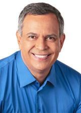
Felix MendonçaPDT · 60.159 votos✓ Reeleito›Gabriel NunesPSD · 155.060 votos✓ Reeleito›Ivoneide CaetanoPT · 163.055 votos✓ Reeleito›Jorge SollaPT · 152.049 votos✓ Reeleito›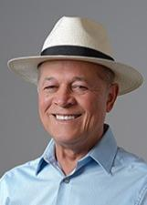
JoseildoPT · 108.200 votos✓ Reeleito›João BacelarPL · 107.232 votos✓ Reeleito›Leur Lomanto JuniorUNIÃO · 108.893 votos✓ Reeleito›Lucas ReisPT · 192.080 votos›Léo PratesREPUBLICANOS · 103.794 votos✓ Reeleito›Manuel RochaUNIÃO · 104.969 votos›Maria MarighellaPT · 108.870 votos›Mario Negromonte JRPSB · 101.536 votos✓ Reeleito›Márcio MarinhoREPUBLICANOS · 97.458 votos✓ Reeleito›Neto CarlettoAVANTE · 197.240 votos✓ Reeleito›OliviaPCDOB · 123.359 votos›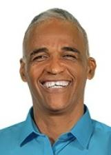
Pastor Sargento IsidórioAVANTE · 248.147 votos✓ Reeleito›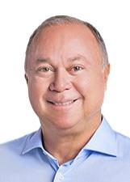
Paulo AziUNIÃO · 105.797 votos✓ Reeleito›Raimundo CostaPSD · 102.907 votos✓ Reeleito›Ricardo MaiaMDB · 147.981 votos✓ Reeleito›Roberta RomaPL · 156.108 votos✓ Reeleito›Sandro FilhoPP · 167.394 votos›Sergio BritoPSD · 148.775 votos✓ Reeleito›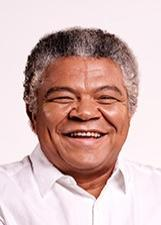
Valmir AssunçãoPT · 148.941 votos✓ Reeleito›Deputados estaduais e distritais (63)
Assembleia por partido
63 cadeiras de Bahia
- PT1422%
- PSD914%
- PL711%
- AVANTE58%
- PDT58%
- UNIÃO58%
- REPUBLICANOS46%
- PCDOB35%
- PP35%
- PV35%
- MDB23%
- PSDB23%
- PSOL12%
Do partido com mais cadeiras para o com menos, não por posição política. Cada partido usa a sua cor de marca.
Deputados estaduais e distritais (63): buscar e ver a lista
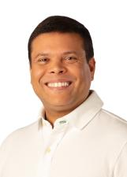
IgorPL · 79.736 votos›Ivana BastosPSD · 203.202 votos✓ Reeleito›Jordavio RamosPSDB · 48.100 votos✓ Reeleito›Josafá MarinhoPDT · 47.464 votos↺ Retorno›José de ArimateiaREPUBLICANOS · 49.372 votos✓ Reeleito›João de FurãoAVANTE · 58.510 votos›Junior MunizPT · 74.146 votos✓ Reeleito›Junior NascimentoUNIÃO · 72.382 votos✓ Reeleito›Jurailton SantosREPUBLICANOS · 60.783 votos✓ Reeleito›Juvenilson PassosPT · 76.627 votos›Jânio Natal JúniorPL · 77.706 votos›Júlio PinheiroPT · 78.635 votos›Kleber RosaPSOL · 68.921 votos›Luciano PinheiroPDT · 92.339 votos›Luciano Simões FilhoUNIÃO · 60.711 votos✓ Reeleito›Ludmilla FiscinaPSD · 64.147 votos✓ Reeleito›Léo de NecoAVANTE · 81.903 votos›Marcinho OliveiraPDT · 83.074 votos✓ Reeleito›Marquinho VianaPV · 60.315 votos✓ Reeleito›Neto CoelhoPDT · 54.429 votos›Neusa CadorePT · 56.914 votos↺ Retorno›NiltinhoPSD · 79.480 votos✓ Reeleito›OsniPT · 89.356 votos✓ Reeleito›Paulo CâmaraPL · 65.682 votos↺ Retorno›Pedro TavaresUNIÃO · 98.193 votos✓ Reeleito›PenalvaPP · 64.606 votos✓ Reeleito›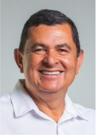
Ricardo RodriguesPSD · 74.441 votos✓ Reeleito›Roberto CarlosPV · 64.295 votos✓ Reeleito›RobinsonPT · 63.800 votos✓ Reeleito›Rogério AndradeMDB · 93.451 votos✓ Reeleito›RosembergPT · 100.378 votos✓ Reeleito›RowennaPT · 137.266 votos›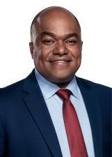
Samuel JúniorPL · 87.152 votos✓ Reeleito›Sandro RegisUNIÃO · 91.754 votos✓ Reeleito›Silva NetoAVANTE · 66.967 votos›Soldado PriscoPL · 50.235 votos↺ Retorno›TagnerPT · 63.032 votos›Tancredo IsidórioAVANTE · 82.883 votos›Tiago CorreiaPSDB · 65.969 votos✓ Reeleito›Vilma ReisPT · 83.222 votos›Vitor AzevedoAVANTE · 68.806 votos✓ Reeleito›Zé RaimundoPT · 74.853 votos✓ Reeleito›Zó do SertãoPCDOB · 60.413 votos✓ Reeleito›Os eleitos de cada cidade do estado.
Poder Judiciário
Julga os conflitos e garante que as leis sigam a Constituição.
Os desembargadores do Tribunal de Justiça e do Tribunal Regional Eleitoral. Não são eleitos.
Como ler
★ Novato Primeiro mandato nesta casa (Câmara ou Senado).
✓ Reeleito Já estava no cargo e foi eleito de novo.
↺ Retorno Já teve mandato, mas estava fora.
Sem selo Não conseguimos ligar a pessoa a um mandato anterior. Isso não quer dizer que seja novata: simplesmente não afirmamos nada.
Provisório Só é confirmado na diplomação.